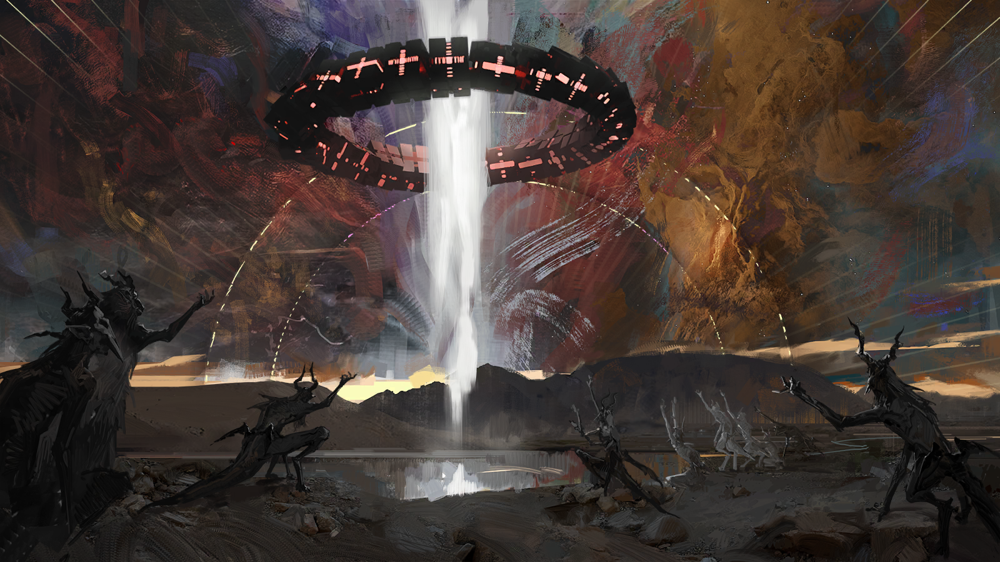

Overview

The term "Sarkaz" refers to a broad category of humanoid races distinct
from both Ancients and Elders, being among the first intelligent beings
to walk the surface of Terra. Once known as the Teekaz, the
original natives of Terra, their era ended with the arrival of the
Predecessors, who colonized the planet and inadvertently introduced
Originium, along with the Ancients and the Elders. What followed were
millennia of conflict between two biologically distinct races,
eventually leading to the collapse of Teekaz civilization and the
scattering of its people across Terra in a vast diaspora. This
dissolution gave rise to four races that share common ancestry with the
Sarkaz: the Sankta, Anasa, Oni, and Durins. The Sarkaz harbor deep
resentment toward the Sankta in particular; they are considered traitors
who betrayed the Teekaz and sullied a once-glorious legacy.
The Sarkaz exhibit a wide range of physical traits depending on their
tribe of origin. Horns are the most common Sarkaz identifier, varying in
shape and size, alongside long, pointed ears and a variety of tails.
However, there are some Sarkaz tribes lacking any of the aforementioned
traits. While horns are a common features among Sarkaz, horn-removal is
sometimes practiced in order to conceal their identities; this is often
seen as a humiliating act of betrayal. Many Sarkaz have physical
traits resembling Caprinae, resulting in infiltrations of Caprinae spies
and refugees into their community. Nevertheless, the Sarkaz have
numerous unique racial traits unseen in any other Terran race.
-
Oripathy Vulnerability: The Sarkaz were the first Terran race to
come into contact with the oldest form of Originium, giving rise to
their ancient racial curse—a heightened vulnerability to Oripathy.
-
Sarkaz Witchcraft: The inherent Sarkaz vulnerability to Oripathy is
often seen as a double-edged blessing that allows them to enhance
Originium Arts at the cost of their lifeforce.
-
Elongated Lifespans: The Sarkaz are known for having far longer
lifespans than the average Terran, up to centuries or even
millennia.
-
Collective Racial Memory: Unlike the empathic communication shared
by the Sankta, the Sarkaz possess the capability to read the racial
memories residing in their genes, particularly those of the
deceased.
-
Esoteric Traditions: Due to the constant burden of Oripathy and
social discrimination, the Sarkaz possess strong religious beliefs
regarding death, firmly believing it to be the only release from
their curse.
Origin Myth

Being the earliest race dwelling upon Terra, the first Sarkaz/Teekaz
were originally animal-like beings wandering around the world millennia
ago. While they practiced a hunter-gatherer custom that is now perceived
as grotesque to many non-Teekaz Terrans such as hunting upon others
which is seen as "cannibalism" in modern eyes, their ancestors viewed it
normally as mere survival instincts. But during a year of famine, a
Teekaz decided to stop hunting his fellow men out of mercy but only to
be banished to the dangerous "Silver Mountains" beneath the ground, but
after 3,000 days when the underground Silver Mountains were brightened,
that Teekaz turned into a human being after contacting the first
Originium while wielding the "Black Crown," earning his respect from his
tribesmen as the Farchaser, the first King of Sarkaz in their history.
After spreading his new knowledge and molding his tribesmen into the
image of man, the Farchaser led his tribe to conquer the Silver
Mountains and pacify its rampaging souls, which in turn established
their first civilization called "Kazdel," "Where home is." They begin to
refer to themselves as "Teekaz," "one who owns a home" in their tongue.
For the remaining centuries, the Teekaz civilizations prospered until
the "Descending War" in 9,000 BCE between them and the alien Ancient and
Elders. As many Teekaz civilizations fell to the aliens, the Farchaser
desperately used the Amnannam, one of the First Originium, to summon the
first Catastrophe in Terran history that brought upon the advent of
Oripathy, which unfortunately cursed them with their vulnerability to
Originium. The fleeing Teekaz refugees had become the rootless "Sarkaz",
ushering in their centuries of exoduses and diaspora.
Discrimination
Since the fall of their civilizations that forcefully displaced them as
the sole inhabitants of Terra, the Sarkaz are banished to the lowest
class of Terran society in which they are treated as "sub-humans" by the
Ancient and Elders. Such conflict resulted in centuries of
dehumanization and discrimination against the Sarkaz. As a consequence,
many quickly call them "demons" or "devils" as racial slurs against
them. They are falsely pictured as harbingers of Oripathy and calamities
as well as bloodthirsty, cannibalistic warmongers who often ignite wars
even though many of these are the consequences of the Sarkaz'
homelessness. Social discrimination and oppression against them are
prevalent across Terra from exemption from social welfare, apartheid
policies, exploitations upon them by using them as mercenary pawns in
battlefields, to even inhumane experimentation upon them.
o many Sarkaz, such discrimination is seen as inevitable due to their
sin as the first Infected, eventually surrendering themselves to
reality. Nonetheless, they embrace their stereotypes as a rallying cry
for unity. Their endless suffering has left them deeply embittered and
vengeful despite attempts by some to convince the Sarkaz to move on from
the past, leading to the Victorian Crisis instigated by the
ultra-nationalist Military Commission of Kazdel.